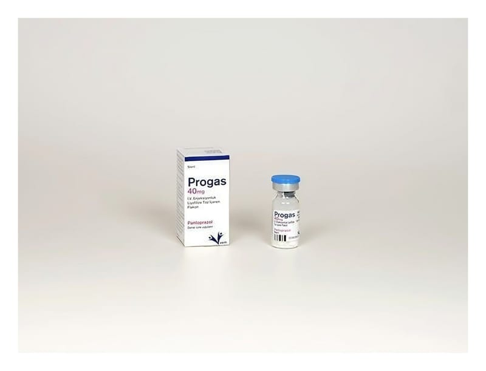

Progas 40 mg I.V. Enjeksiyonluk Liyofilize Toz İçeren Flakon ,1 Adet

Ne için kullanılır
KT · Bölüm 1PROGAS enjeksiyonluk çözelti için beyaz, hemen hemen beyaz liyofilize tozdur. 40 mg toz içeren, 10 ml kapasiteli renksiz cam flakon içerisinde yer alır. Etkin madde olarak pantoprazol içeren PROGAS, “proton pompası inhibitörü” olarak bilinen ilaçlardan biridir. Midenizde asit oluşumunu azaltır. Midede asit nedeniyle oluşan hastalıkların tedavisinde kullanılır.
PROGAS; Asidin mideden yemek borusuna kaçışına bağlı yemek borusunda iltihaplanma ve ağrı (Reflü özofajit) Bağırsakların üst kısmındaki ülser (duodenum ülseri) veya midedeki ülser (gastrik ülser) Bu ilacı kullanmaya başlamadan önce KULLANMA TALİMATINI dikkatlice okuyunuz, çünkü sizin için önemli bilgiler içermektedir. Bu kullanma talimatını saklayınız. Daha sonra tekrar okumaya ihtiyaç duyabilirsiniz. Eğer ilave sorularınız olursa, lütfen doktorunuza veya eczacınıza danışınız. Bu ilaç kişisel olarak size reçete edilmiştir, başkalarına vermeyiniz. Bu ilacın kullanımı sırasında doktora veya hastaneye gittiğinizde bu ilacı kullandığınızı doktorunuza söyleyiniz. Bu talimatta yazılanlara aynen uyunuz. İlaç hakkında size önerilen dozun dışında yüksek veya düşük doz kullanmayınız.
Akut (ani başlangıçlı) kanamalı mide veya bağırsakların üst kısmındaki ülserlerde, kanamanın tedavisinde veya kanamanın tekrarlamasını önlemede, Zollinger Ellison Sendromu gibi midede aşırı asit üretiminin olduğu durumların tedavisinde kullanılır.